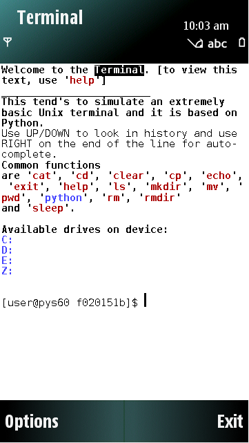
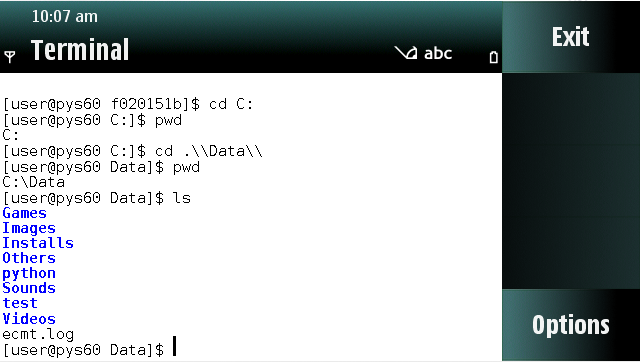
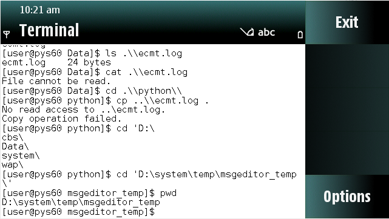
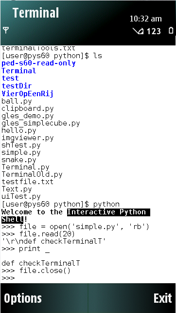
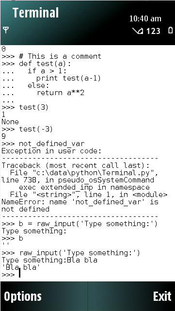
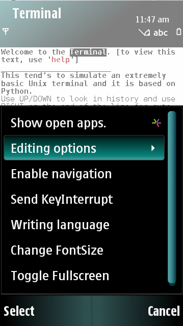

No doc made yet. For now, look in 'README' and 'INSTALL'. Run 'Terminal.py' on a S60 device and execute 'help'. For more help on using the 'terminalTools' module, take a look at 'demos.py'.

Start screen.
Some trivial console stuff (1).
Some trivial console stuff (2).
CD to a directory containing many python files, and starting python in interactive mode at that path.
Some playing with the python interactive shell.
The softkey 'Options' menu.